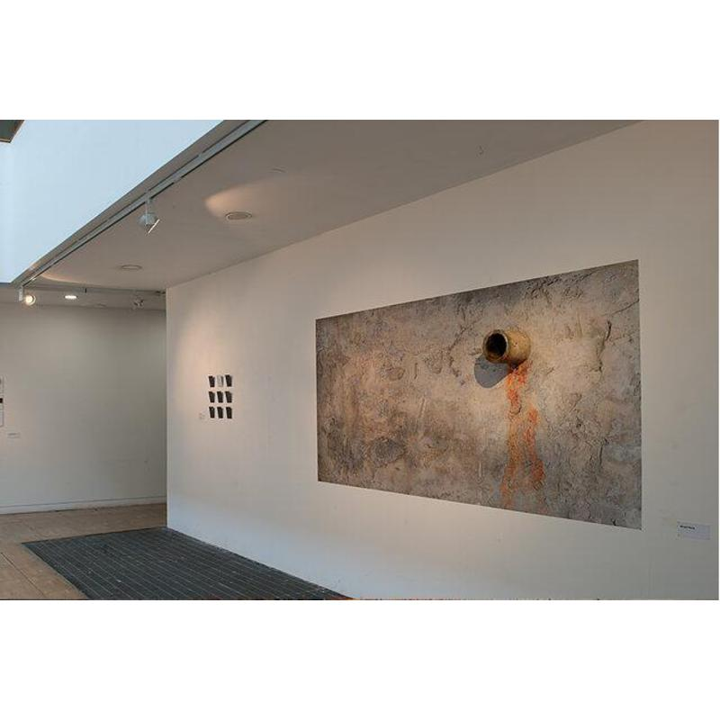
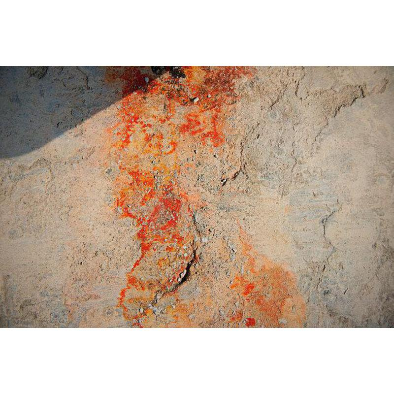
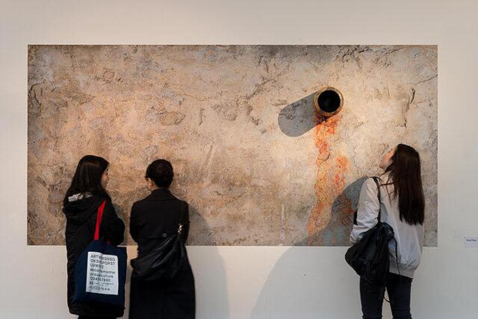

1 of 4

2 of 4

3 of 4

4 of 4

Mingdi Wang's practice explores the relationship between real space and photographic space. The time and space of a photograph displayed, isolated, on a wall is quite different from real time and space. In this respect it is quite remote from the viewer. The artist is therefore interested in trying to connect these two spaces and bring the viewer closer to the photograph. In his "Wall" project Mingdi built a concrete wall which he then photographed. This photographic print is displayed with a real concrete pipe attached, transforming the photograph into a real wall, that exists in real space. The artist aims to evoke a desire in the viewer to get close to the work and even touch it.